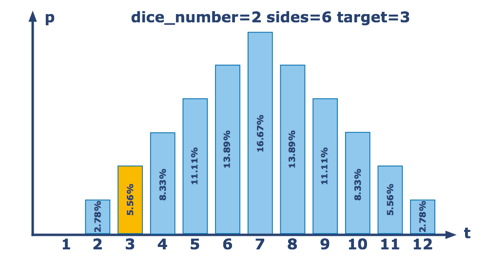

Probably Dice¶
Typically, when using multiple dice, you simply roll them and sum up all the result. To get started with your investigation of dice probability, write a function that takes the number of dice, the number of sides per die and a target number and returns the probability of getting a total roll of exactly the target value. The result should be given with four digits precision as ±0.0001. For example, if you roll 2 six-sided dice, the probability of getting exactly a 3 is 2/36 or 5.56%, which you should return as ≈0.0556.
For each test, assume all the dice are the same and are numbered from 1 to the number of sides, inclusive. So a 4-sided die (D4) would have an equal chance of rolling a 1, 2, 3 or 4. A 20-sided die (D20) would have an equal chance of rolling any number from 1 to 20.
Input: Three arguments. The number of dice, the number of sides per die and the target number as integers.
Output: The probability of getting exactly target number on a single roll of the given dice as a float.
Example:
probability(2, 6, 3) == 0.0556 # 2 six-sided dice have a 5.56% chance of totalling 3
probability(2, 6, 4) == 0.0833
probability(2, 6, 7) == 0.1667
probability(2, 3, 5) == 0.2222 # 2 three-sided dice have a 22.22% chance of totalling 5
probability(2, 3, 7) == 0 # The maximum you can roll on 2 three-sided dice is 6
Precondition:
1 ≤ dice_number ≤ 102 ≤ sides ≤ 200 ≤ target < 1000
Solution:
def partition(n, m, t):
if not n<=t<=n*m:
return 0
elif n==1:
return 1
elif n==2:
return min(m, t-1) - max(1, t-m) + 1
ptable = [0, [0]+[1]*m]
for i in range(2, n):
ptable.append([0]*(i*m+1))
for j in range(i, i*m+1):
for k in range(max(1, j-(i-1)*m), min(m, j-i+1) + 1):
ptable[i][j] += ptable[i-1][j-k]
p = 0
for k in range(max(1, t-(n-1)*m), min(m, t-n+1) + 1):
p += ptable[n-1][t-k]
return float(p)
def probability(dice_number, sides, target):
return partition(dice_number, sides, target)/sides**dice_number